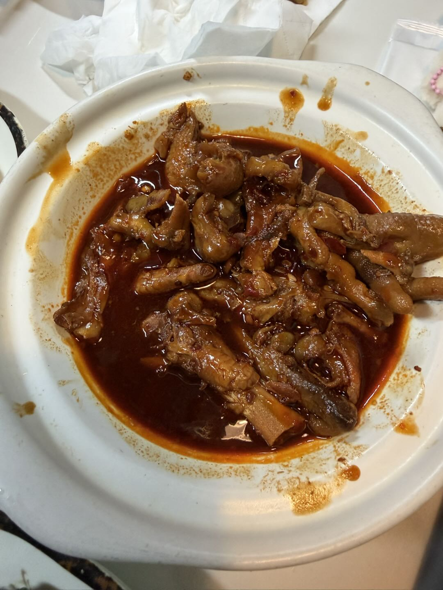
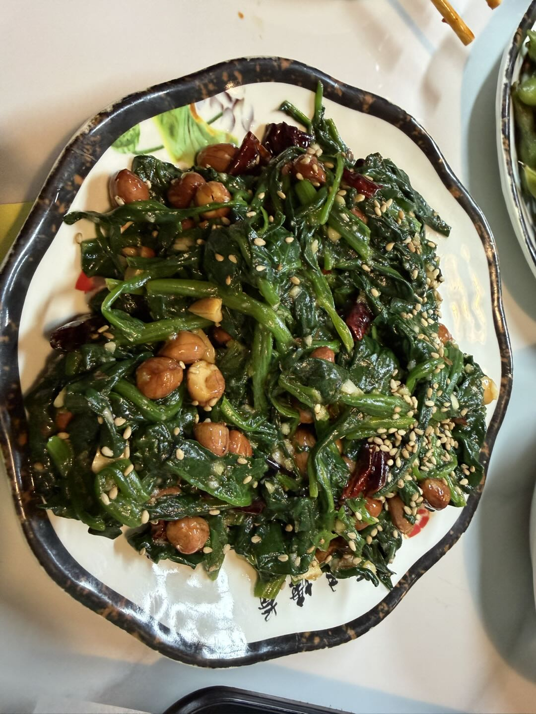
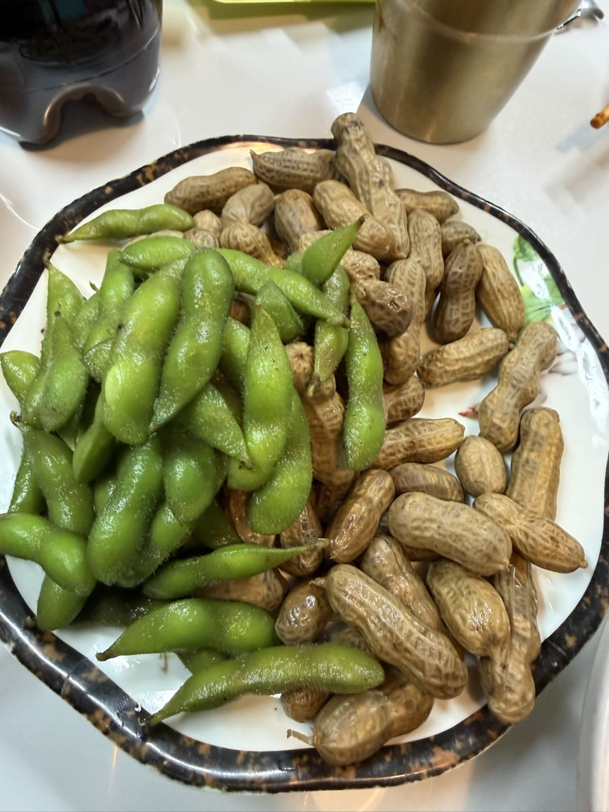
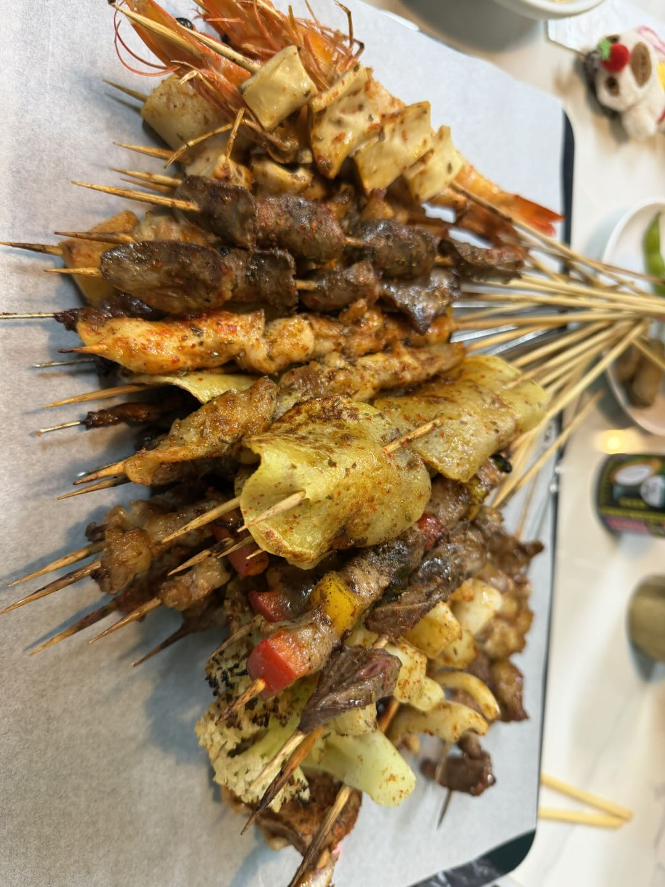

探店介绍
“烤五行”不仅是一家串店，更是一种北京深夜的文化符号。店名取自金木水火土的调和，反映在每一串经过碳火洗礼的食材中。这里的每一口，都是对火候和调味的极致追求。
现场实拍 (Live from Store)

软糯鸡爪
这就是传说中全北京最好吃的鸡爪，软糯入味，汤汁浓郁。

深夜烟火
现场炭火现烤，保证每一串到达桌上时都带着最诱人的焦香味。

食材严选
肥瘦相间的羊肉在炭火上滋滋作响，这是属于吃货的极致浪漫。

市井氛围
这就是“烤五行”的魅力，简单、直接、热烈。
觅食地址
北京市朝阳区十里堡（经典分店）
※ 建议傍晚后前往，感受最纯正的市井烟火。